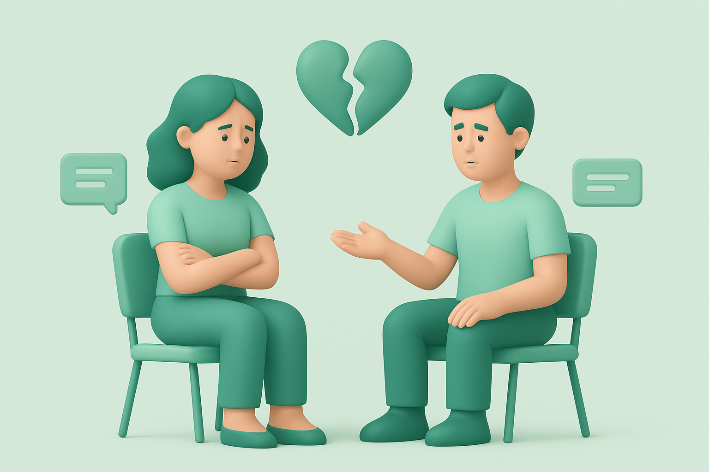

Mental health is about how you think, feel, and deal with problems on a daily basis. It's the foundation of how we process emotions, handle stress, build relationships, and make decisions.
Mental health influences how we study, work, and connect with others. Everyone's experience is different — shaped by our emotions, relationships, environment, and personal history. Just like physical health, mental health exists on a spectrum and can change over time.
Taking care of our mental health is just as important as caring for our physical health. It's not about being perfect or always feeling positive — it's about building resilience, seeking support when needed, and creating habits that help us thrive.
Learn More

Stress is a natural part of student life — but it doesn't have to overwhelm you. Building healthy coping habits can help you manage pressure, protect your mental health, and maintain balance.
Studying doesn't have to mean burnout. Working smarter, not harder, helps you retain information better, stay focused longer, and protect your mental health.